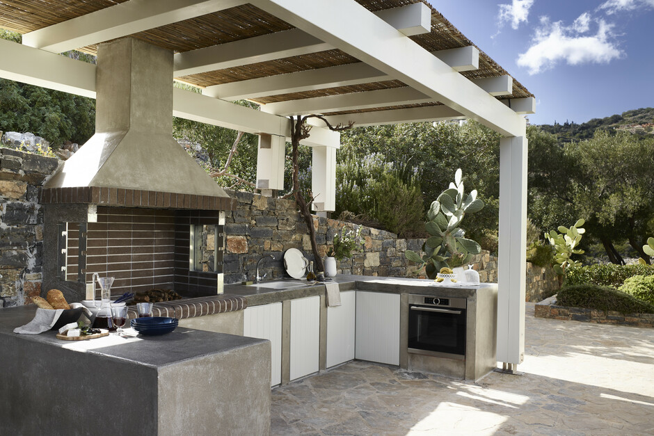

Decks
“Build the Deck You've Been Dreaming Of.”
Your deck should feel like an escape—just steps outside your door.
It's where quiet mornings start with a cup of coffee, where summer nights stretch a little longer, and where friends
and family naturally gather without needing a reason.
Whether you're replacing an old, worn-out structure or building something brand new, we create decks that don't just look good—they feel right.
Every board, every detail is built with intention, turning your outdoor space into a place you actually want to spend time in.
This isn't just a deck—it's where everyday moments become something you look forward to.

Patios
“Your Perfect Patio.”
Your patio should feel like a natural extension of your home—a place where life just flows a little easier.
It's where mornings begin with fresh air and quiet, where weekends turn into gatherings, and where long days
wind down under the open sky.
Whether you're starting from scratch or upgrading what's already there,
we create patios that invite you outside and make you want to stay.
With the right design, materials, and layout, your backyard becomes more than just space—it becomes a place for connection,
relaxation, and moments you'll actually look forward to every day.

Fencing
“Strong Fencing. Beautiful Boundaries.”
Your fence should do more than mark a boundary—
it should give you a sense of privacy, security, and peace of mind the moment you step outside.
It's what turns a yard into your space, where you can relax, entertain, and enjoy without feeling exposed.
Whether you're replacing an old, worn fence or installing something brand new, we create fencing that not only looks great but feels right for your home.
With the right design and craftsmanship, your property becomes more defined, more secure, and a place you can truly call your own.

Outdoor Kitchens
“Cook, Host, Live - All in Your Outdoor Kitchen”
Your outdoor kitchen should be more than just a place to cook—it should be where everything comes together.
It's the sound of laughter while food's on the grill, the feeling of not missing a moment because you're part of the gathering,
and the kind of space that naturally pulls people outside.
Whether it's casual weeknights or full-on hosting, we create outdoor kitchens that make entertaining effortless
and everyday moments feel like something special.
With the right layout, design, and craftsmanship, your backyard becomes a space you don't just use—you experience.

Sunrooms
“Turn Every Season Into Sunroom Season.”
Your sunroom should feel like your favorite place in the house—the spot where natural light pours in,
the outside world feels close, and everything slows down just a bit.
It's where mornings feel brighter, afternoons feel calmer, and every season becomes something you can actually enjoy from the comfort of your home.
Whether you're looking for a quiet space to unwind or a bright area to gather with family and friends,
we create sunrooms that blend the beauty of the outdoors with the comfort of indoors.
This isn't just an addition—it's a space that changes how your home feels every single day.

Fireplaces
“Warm Nights Start with an Outdoor Fireplace”
Your outdoor fireplace should be more than just a feature—it should be the place everything gathers around.
It's the warmth on a cool night, the glow that keeps conversations going, and the reason people stay just a little longer.
Whether you're winding down after a long day or hosting friends and family, it creates a space that feels inviting, comfortable, and alive.
We design fireplaces that don't just look impressive—they transform your backyard into a setting where moments happen naturally and memories are made without trying.

Ready to start your exterior project?
Tell us what you have in mind and we'll get back to you with a free consultation.
Request a Free Estimate